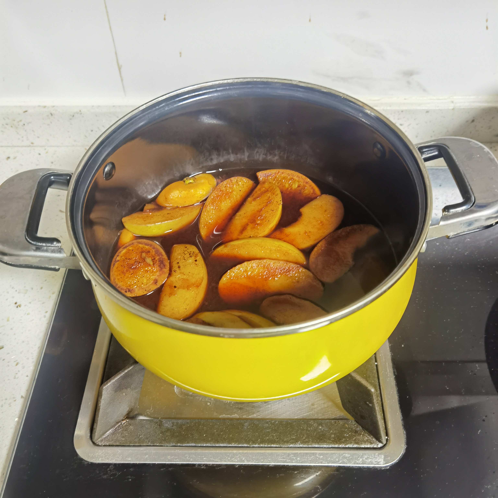

教程来源：【冬天必做的果香热红酒方子来了！用这份暖洋洋的甜美馨香迎接美好的节日季】-Bilibili 网-主厨广坦
自己把家里觉得酸涩难喝的红酒拿来实验，去掉了教程中放的香料，最终成品醇厚利口，蜂蜜、红酒、水果诸香俱全。所以说是一种拯救难喝的红酒的好办法。
- 将以下材料倒入煮锅中：
- 半瓶红酒
- 一个苹果切瓣
- 一个橙子切片
- 两勺蜂蜜
- 两勺白糖
- 开火保持红酒微微冒泡，慢煮 30 分钟；
- 将水果夹出，盛出酒液即可饮用。
注意事项：
- 红酒提供最终成品中的酸味，蜂蜜和白糖提供最终成品中的甜味。所以如果不想太酸就不要吝啬放蜂蜜或白糖。
- 煮出来的水果算是副产物（即“酒渍水果”），也很好吃。放水果的量可以自己把握。
- 有条件可以过滤，若想获得澄清酒液需要用滤纸过滤。
配一张煮制过程的图：

煮制热红酒